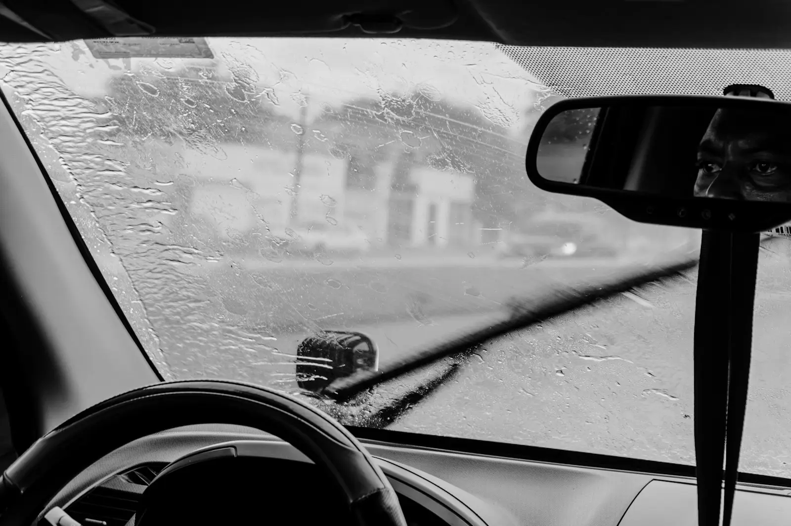

Contact
Contact Our Wichita Auto Glass Team
The fastest way to a quote is a phone call: (316) 669-4751. If you'd rather type, fill out the form and we'll call you back.
Request a Wichita Auto Glass Quote
Phone, Hours and Service Area
Phone: (316) 669-4751
Hours: Monday through Friday, 8am to 6pm
Service address: 926 N Water St Suite 3, Wichita, KS 67203 (mobile service only, no walk-ins)
We cover: Wichita, Derby, Andover, Maize, Haysville, Park City, Bel Aire, Goddard, Valley Center, Mulvane and the rest of Sedgwick County.

What Happens When You Call?
- We ask for your year, make and model, and your VIN if it's handy. The VIN tells us exactly which windshield or window fits your car.
- We ask where the damage is and how big it is, so we can tell you whether a rock chip repair will work or you need a new windshield.
- If you're using insurance, we help you start the glass claim with your carrier while you're on the line.
- We give you a quote and pick a time and place: your driveway, your work lot, or anywhere flat and dry in the Wichita area.
Most calls take under ten minutes. If you'd rather send photos first, use the form above and mention it.
Cracked glass in Wichita? Get it handled this week.
Call and tell us the year, make and model. We’ll give you a straight quote and a time slot.